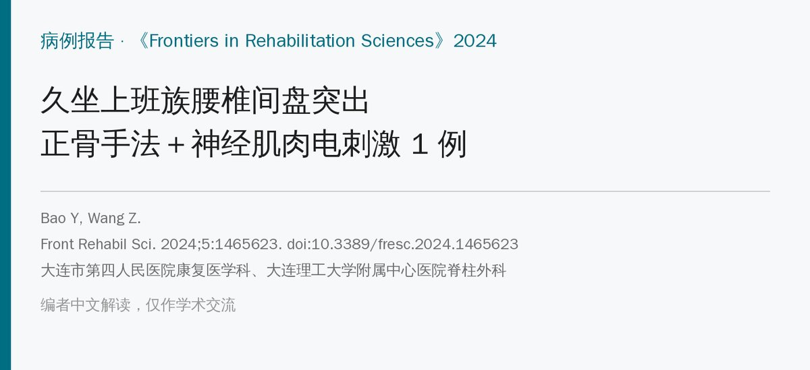
🔖原文信息（编者中文重排）
📚 文献信息
▪ Bao Y, Wang Z. Combination of traditional Chinese bone setting and NMES technique for treating lumbar disc herniation: a case report. Front Rehabil Sci. 2024;5:1465623. doi:10.3389/fresc.2024.1465623
▪ 作者单位：大连市第四人民医院康复医学科、大连理工大学附属中心医院脊柱外科
▪ 文章类型：病例报告（1 例，随访 1 年）
• 33 岁久坐白领，L3/4、L4/5、L5/S1 三节段椎间盘突出，腰痛 VAS 6 分，弯腰受限、下肢放射痛
• 治疗三步走：神经肌肉电刺激放松 → 脊柱（定点）旋转复位法正骨 → 电刺激同步肌力训练，再加健康教育
• 作者报告 3 次治疗后压痛、痉挛消失；随访疼痛降到 0，前屈 45° → 80°，1 年未复发
• 但只有 1 例、多种方法同时用，“椎体位移”的理论也缺乏影像对比，结论要谨慎看
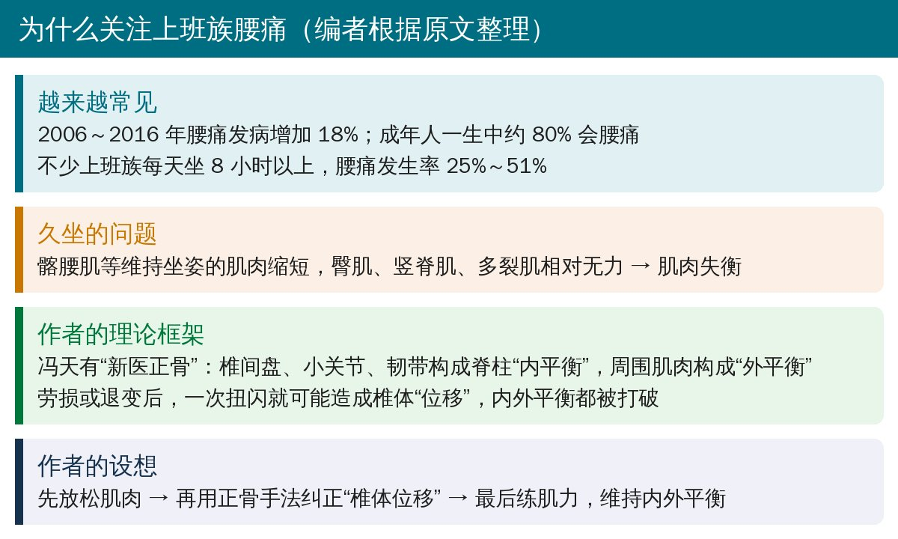
🔖背景与作者的理论框架（编者根据原文整理）
作者采用的是冯天有教授的“新医正骨”理论：椎间盘、小关节和韧带构成脊柱的“内平衡”，脊柱前后左右的肌肉构成“外平衡”。久坐劳损或退变后，一次弯腰搬物就可能造成单个或多个椎体“位移”，打破内外平衡，引起腰痛和代偿性的肌肉僵硬、脊柱侧弯。
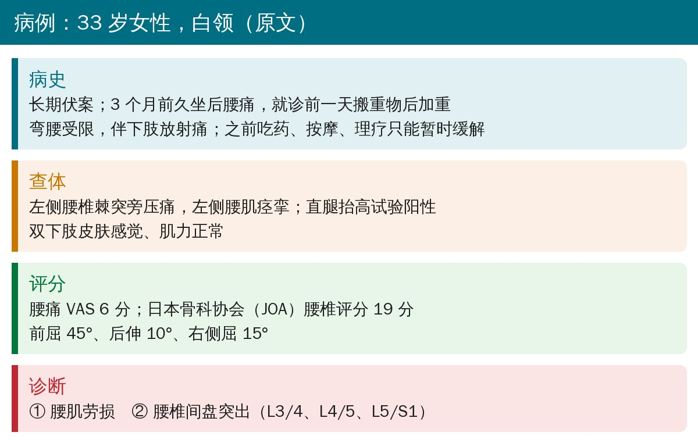
🔖病例概况（据原文整理）
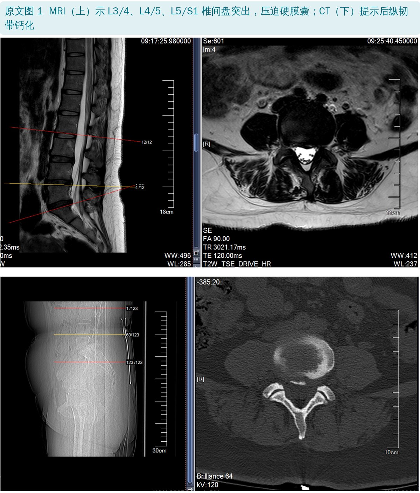
🔖原文图 1：MRI 和 CT
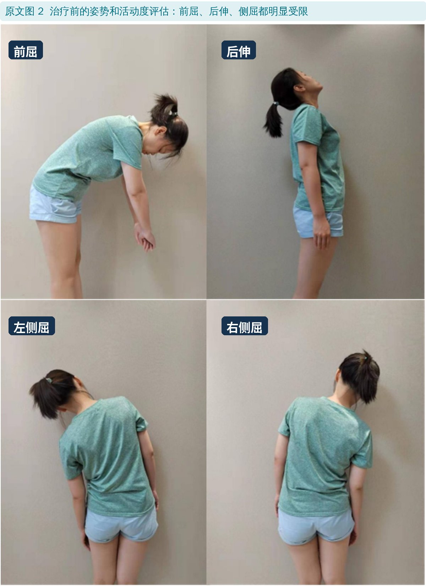
🔖原文图 2：治疗前活动度
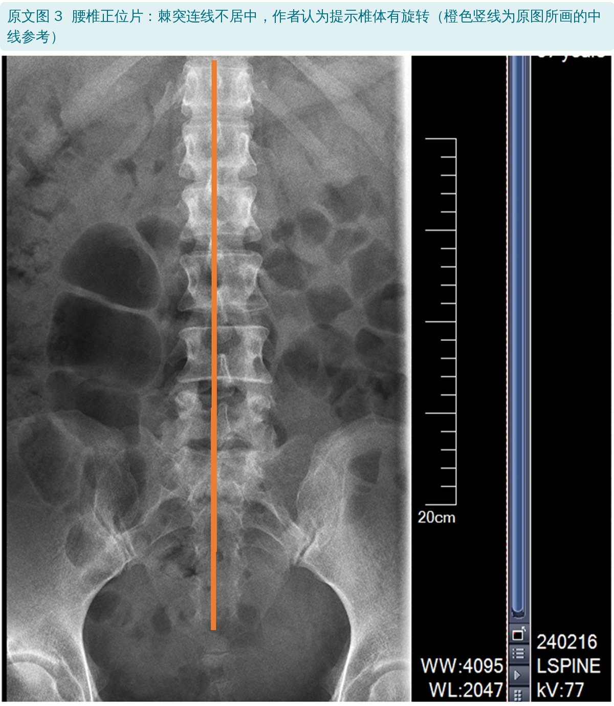
🔖原文图 3：腰椎正位片
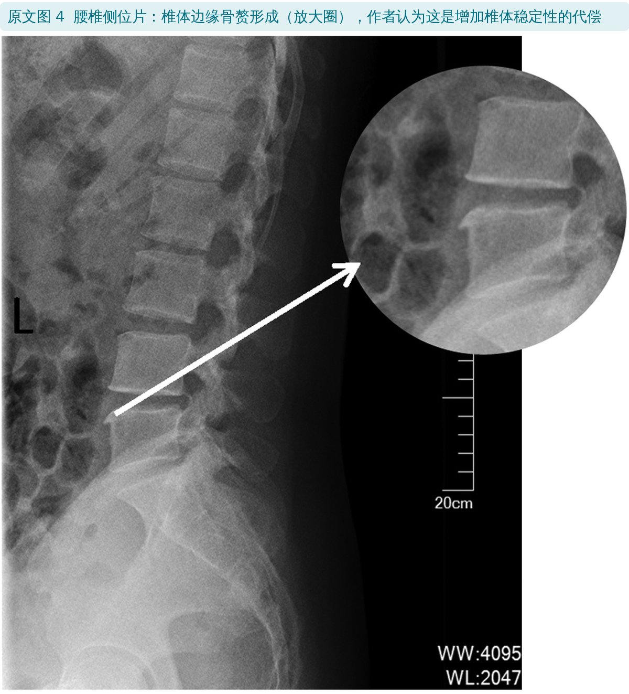
🔖原文图 4：腰椎侧位片
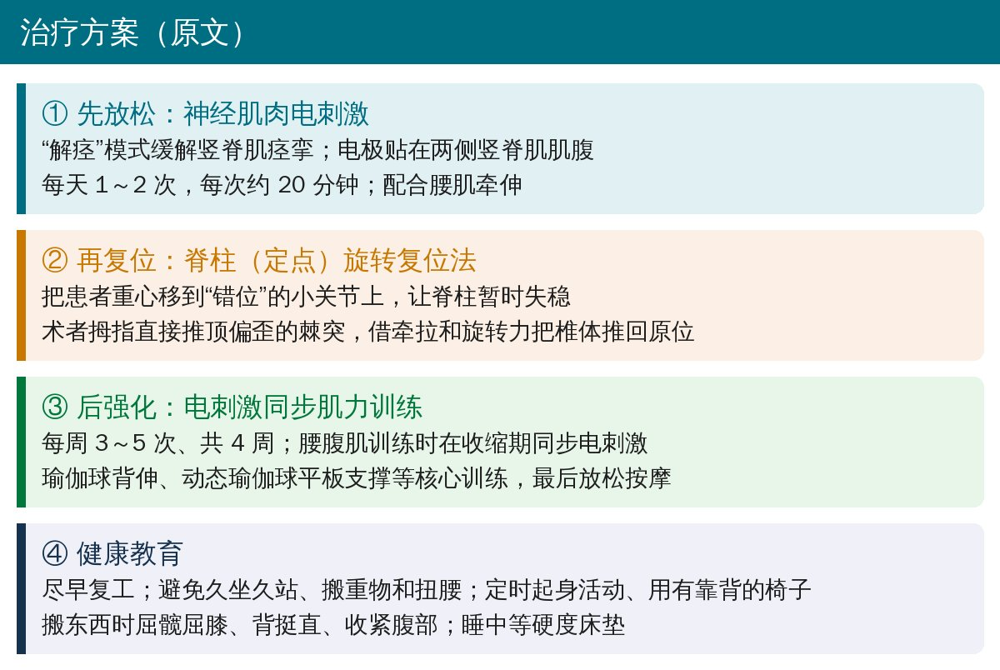
🔖治疗方案（据原文整理）
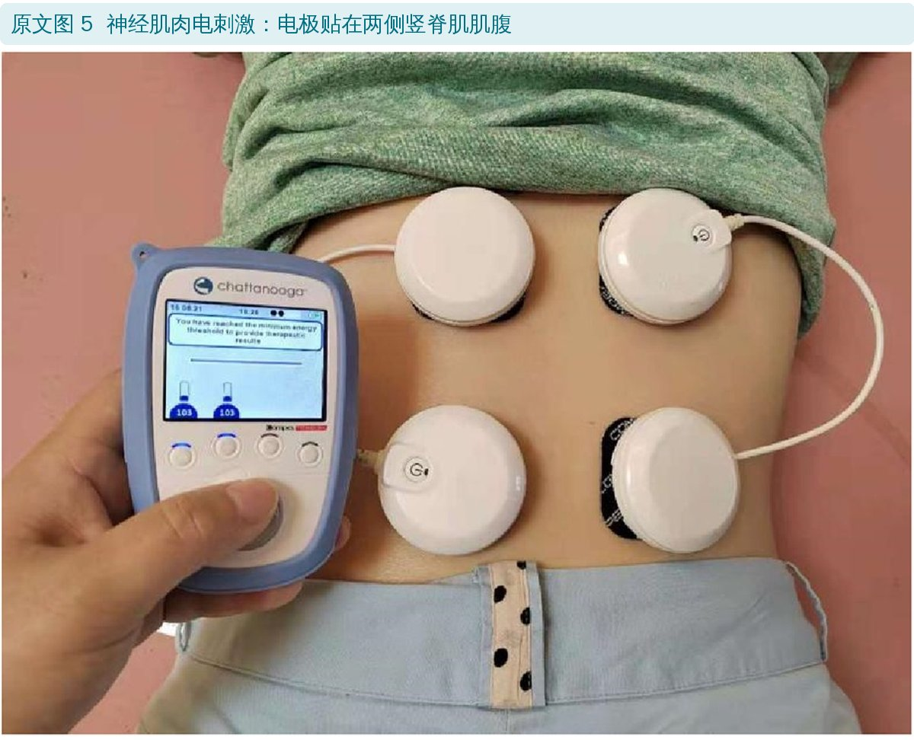
🔖原文图 5：电极位置
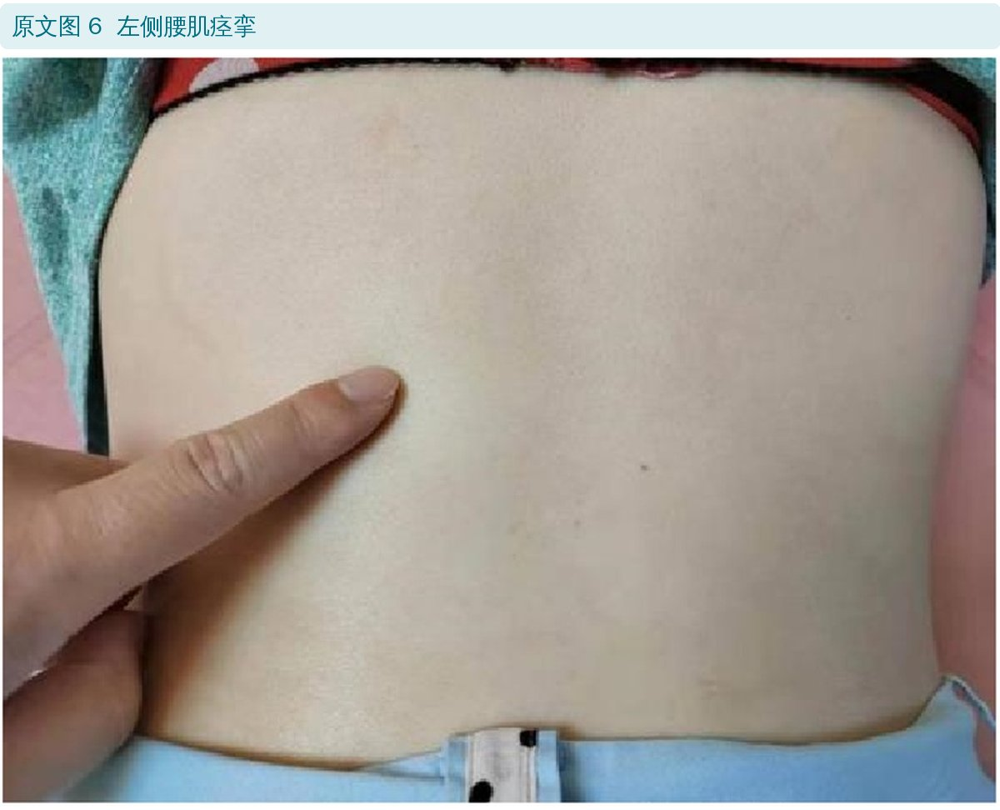
🔖原文图 6：左侧腰肌痉挛
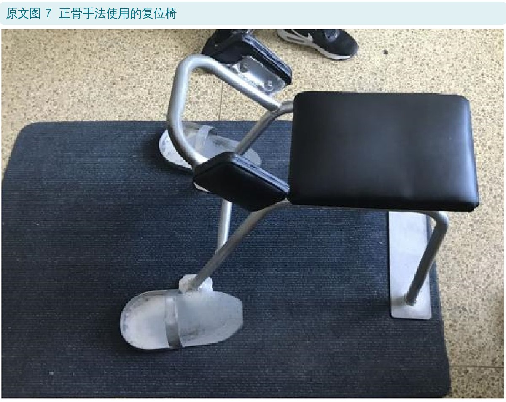
🔖原文图 7：复位椅
作者认为电刺激在这里有几层作用：早期缓解腰肌痉挛，为手法复位做准备；早期做稳定肌的等长收缩，减轻脊柱关节的机械应力；腰部肌肉以耐力型 Ⅰ 型纤维为主，电刺激程序可针对性训练；电刺激与主动收缩同步，还有助于运动再学习和姿势控制。上班族时间有限，也可以在家继续使用。
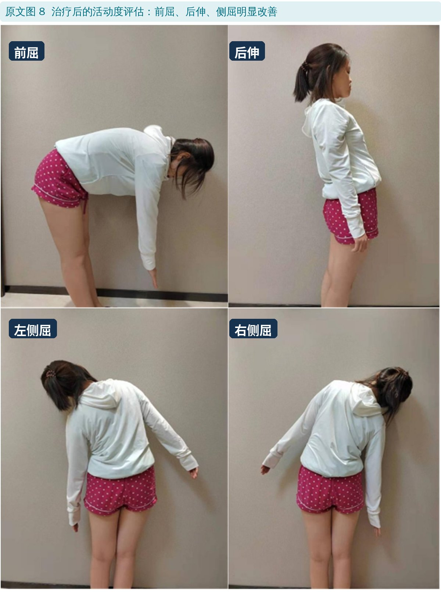
🔖原文图 8：治疗后活动度
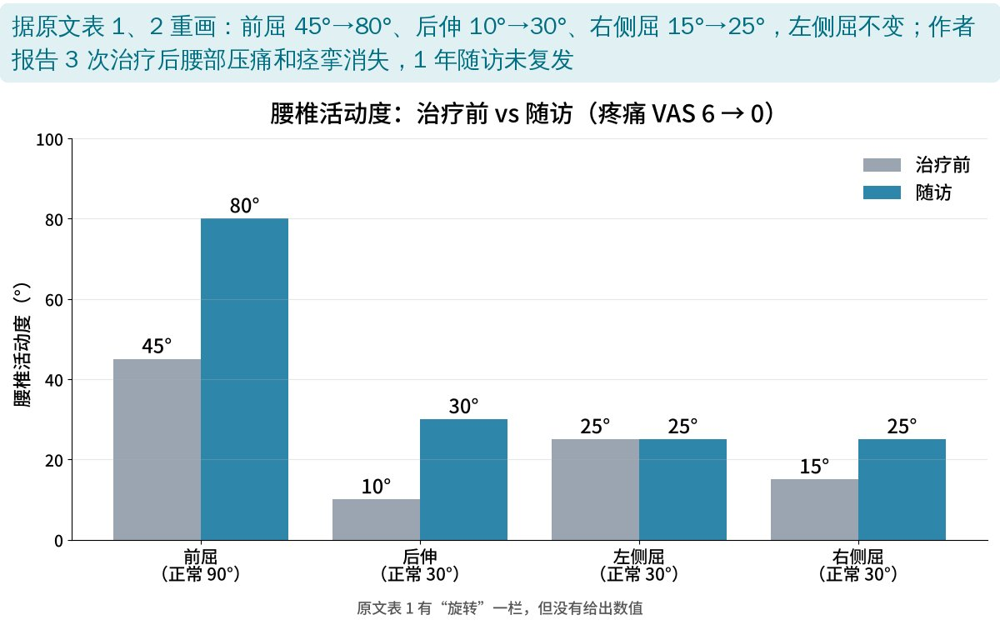
🔖活动度对比（据原文表 1、2 重画）
原文表 2：治疗前后对比
| 项目 | 治疗前 | 治疗后 |
|---|---|---|
| 疼痛 VAS | 6 | 0 |
| 前屈 | 45° | 80° |
| 后伸 | 10° | 30° |
| 侧屈（左／右） | 25° / 15° | 25° / 25° |
| 复发 | 有 | 1 年随访无复发 |
| 回归工作 | 延迟 | 很快复工 |
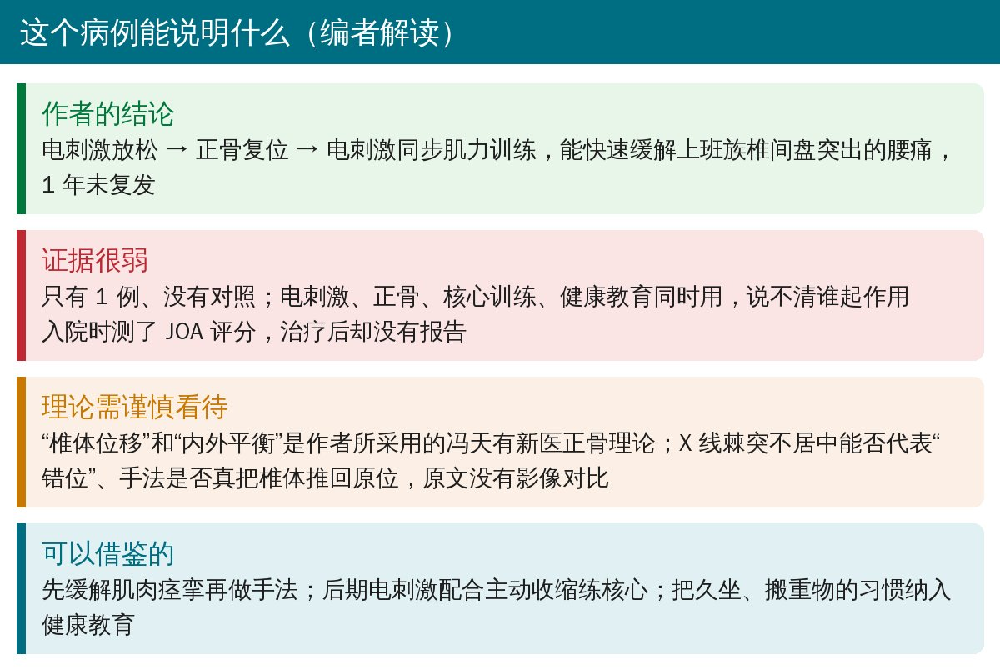
🔖编者解读
• 单个病例、没有对照；电刺激、正骨、核心训练、健康教育一起用，无法区分各自的作用
• 入院时测了 JOA 评分（19 分），治疗后没有报告；也没有治疗后的影像，无法证实“椎体位移”被纠正
• 优点：治疗流程和电刺激参数写得比较清楚，有治疗前后的活动度照片对比
• 表 1 表头有“旋转（左／右）”，但没有给出数值，表 2 也没有旋转
• 结果说 3 次治疗后“前屈恢复正常”，表中随访前屈为 80°（表头正常范围 0～90°）
• 讨论中冯天有手法的出处标为文献 12，实为电刺激综述；电刺激的出处标为文献 13，实为冯天有学术研究，两者对调
• 腰肌痉挛明显时，可以先用电刺激或其他方法放松，再做手法或运动治疗
• 后期用电刺激配合主动收缩训练核心（腰腹肌、瑜伽球背伸、平板支撑），比单纯被动治疗更有利于维持疗效
• 对久坐人群，健康教育不能少：定时起身、椅子有靠背、搬物屈髋屈膝背挺直
• 正骨手法需由受过训练的医生操作；原文也提醒手法不当可能造成神经损伤或进一步错位
欢迎关注骨科康复小黄公众号，获取更多物理治疗的专业知识！
📄参考文献：
Bao Y, Wang Z. Combination of traditional Chinese bone setting and NMES technique for treating lumbar disc herniation: a case report. Front Rehabil Sci. 2024;5:1465623. doi:10.3389/fresc.2024.1465623
原文以知识共享署名（CC BY）协议开放获取。原文图 1～8 引自原文，图 2、8 的中文动作标签为编者所加，影像设备参数保留原样；活动度图由编者根据原文表 1、2 重画；整理卡为编者根据原文撰写。